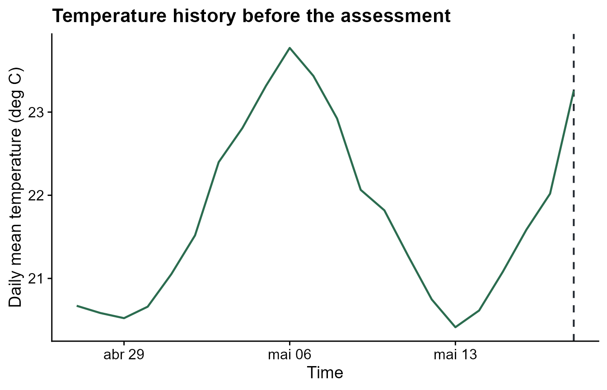
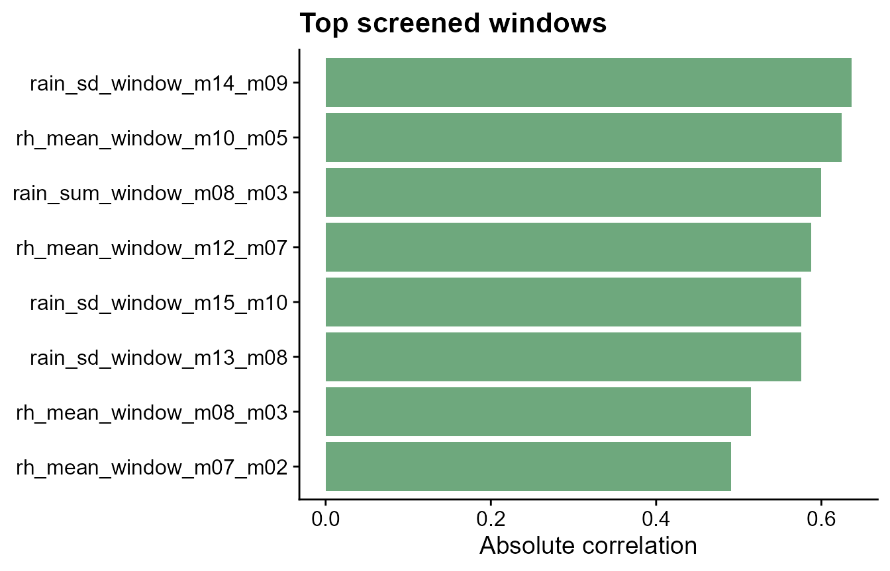

Run this setup first. It loads the packages used in the tutorial and sets figure options.
windcut is designed for plant disease epidemiologists
who want to explore which periods of weather are most informative around
a biologically meaningful reference date.
What you will learn. In this tutorial, we will load a bundled demo dataset, define relative-time windows, generate weather features, and screen them against disease intensity.
Load a demo dataset
The first step is to load a bundled multi-site dataset. Each site has its own daily weather time series, and the assessment table contains one disease outcome per site. This mirrors the package’s modeling unit: weather history for a location paired with one disease outcome. The bundled data also include the hourly source table used to create the daily version, but this tutorial starts from daily data so the window-pane workflow is easier to read.
data(window_pane_demo_data)
weather <- window_pane_demo_data$weather
assessments <- window_pane_demo_data$assessments
knitr::kable(head(weather))| site_id | date | time | daily_mean_temp | daily_mean_rh | daily_sum_rain | daily_sum_leaf_wetness |
|---|---|---|---|---|---|---|
| S01 | 2023-12-01 | 2023-12-01 | 22.33292 | 80.61750 | 7.15 | 6 |
| S01 | 2023-12-02 | 2023-12-02 | 22.67500 | 78.64167 | 0.85 | 4 |
| S01 | 2023-12-03 | 2023-12-03 | 23.35333 | 79.42042 | 3.61 | 7 |
| S01 | 2023-12-04 | 2023-12-04 | 23.39167 | 77.86875 | 0.00 | 3 |
| S01 | 2023-12-05 | 2023-12-05 | 23.13667 | 78.99000 | 6.59 | 6 |
| S01 | 2023-12-06 | 2023-12-06 | 22.63375 | 80.20750 | 0.86 | 6 |
| site_id | assessment_id | assessment_time | response_type | disease_intensity | planting_time |
|---|---|---|---|---|---|
| S01 | S01 | 2024-05-18 | percent | 75.2 | 2024-02-14 |
| S02 | S02 | 2024-05-07 | percent | 59.2 | 2024-02-03 |
| S03 | S03 | 2024-05-20 | percent | 53.9 | 2024-02-19 |
| S04 | S04 | 2024-04-12 | percent | 71.7 | 2024-01-16 |
| S05 | S05 | 2024-04-29 | percent | 80.9 | 2024-02-02 |
| S06 | S06 | 2024-04-15 | percent | 87.2 | 2024-01-14 |
| S07 | S07 | 2024-04-25 | percent | 84.0 | 2024-01-31 |
| S08 | S08 | 2024-04-23 | percent | 83.2 | 2024-01-22 |
| S09 | S09 | 2024-04-13 | percent | 59.4 | 2024-01-12 |
| S10 | S10 | 2024-05-05 | percent | 72.6 | 2024-02-10 |
Before generating features, it is useful to look at the daily weather signal relative to a reference date. The dashed line marks the disease assessment for one site, and the plotted weather history is the period immediately before that reference date that later gets summarized into windows.
first_reference_time <- assessments %>%
slice(1) %>%
pull(assessment_time)
plot_weather <- weather %>%
filter(site_id == assessments$site_id[1]) %>%
filter(time >= first_reference_time - 21 * 86400, time <= first_reference_time)
ggplot(plot_weather, aes(time, daily_mean_temp)) +
geom_vline(
xintercept = first_reference_time,
linetype = "dashed",
color = "#20262e",
linewidth = 0.7
) +
geom_line(color = "#2b6c4f", linewidth = 0.8) +
labs(
title = "Temperature history before the assessment",
x = "Time",
y = "Daily mean temperature (deg C)"
) +
cowplot::theme_half_open()
Understand the data structure
The bundled demo weather is already daily. Its weather-column names include the daily statistic used to create them:
-
time: timestamp of the daily observation -
daily_mean_temp: daily mean temperature -
daily_mean_rh: daily mean relative humidity -
daily_sum_rain: daily rainfall total -
daily_sum_leaf_wetness: daily wet hours
And an assessment table with at least:
- a reference date, such as assessment, planting, flowering, or inoculation date
- optionally an assessment ID
- optionally a disease response such as incidence or severity
Your own data do not need to use those exact weather-column names. In
scan_windows() and window_pane(), use
weather_cols to choose the weather variables to summarize.
For example, a dataset with columns named temp2m,
sradiation, and prectot can use
weather_cols = c("temp2m", "sradiation", "prectot"). If you
want shorter feature names, use a named vector such as
weather_cols = c(temp = "temp2m", solar = "sradiation", rain = "prectot").
Define candidate windows
Here we use the classic fixed-width window pane: one 5-day exposure
period slides through the relative-time range. Negative offsets are
before the reference date, 0 is the reference date, and
positive offsets are after the reference date. The optional
reference_col stores which date column should be used later
when the windows are applied to site-specific data. The default
slide_by = 1 moves the window one relative-time unit at a
time; use a larger value when you want a coarser scan.
windows <- make_windows(
min_offset = -21,
max_offset = 0,
width = 5,
reference_col = "assessment_time"
)
knitr::kable(head(windows))| relative_start | relative_end | width | label |
|---|---|---|---|
| -21 | -16 | 5 | window_m21_m16 |
| -20 | -15 | 5 | window_m20_m15 |
| -19 | -14 | 5 | window_m19_m14 |
| -18 | -13 | 5 | window_m18_m13 |
| -17 | -12 | 5 | window_m17_m12 |
| -16 | -11 | 5 | window_m16_m11 |
Window labels encode direction and interval boundaries. For example,
window_m05_z00 means that a weather summary was computed
over the 5-day interval ending at whichever reference date the user
chooses. A label such as window_p01_p06 would mean the
5-day interval beginning 1 day after the reference date.
When the relevant exposure duration is uncertain, give
width several values, such as width = 2:4 or
width = c(2, 4, 6). The same slide_by argument
controls how far the window start moves between candidate windows.
Because the demo weather uses daily column names, we define which daily columns should be summarized inside each candidate window. The names on the left become the names used in the generated window features.
daily_weather_cols <- c(
temp = "daily_mean_temp",
rh = "daily_mean_rh",
rain = "daily_sum_rain",
leaf_wetness = "daily_sum_leaf_wetness"
)The statistics argument controls what is computed inside
each candidate window. For example,
statistics = c("mean", "median", "sd", "IQR") asks for
those four R functions for each weather variable. Custom named functions
also work.
Scan one reference date
Scanning one site and one reference date first is a good diagnostic step. It shows exactly which summaries will be computed for each candidate window before the same operation is repeated for every site.
scanned <- scan_windows(
weather = weather %>% filter(site_id == assessments$site_id[1]),
reference_time = assessments$assessment_time[1],
windows = windows,
weather_cols = daily_weather_cols,
statistics = list(
temp = c("mean", "median"),
rh = list(mean = "mean", days_ge_90 = count_ge(90)),
rain = c("sum", "sd"),
leaf_wetness = "sum"
)
)
knitr::kable(
scanned %>%
select(label, temp_mean, temp_median, rain_sum, rain_sd, rh_mean, rh_days_ge_90) %>%
slice_head(n = 6)
)| label | temp_mean | temp_median | rain_sum | rain_sd | rh_mean | rh_days_ge_90 |
|---|---|---|---|---|---|---|
| window_m21_m16 | 20.69825 | 20.66042 | 14.94 | 2.716343 | 80.33983 | 0 |
| window_m20_m15 | 20.86758 | 20.66042 | 15.06 | 2.713802 | 80.74733 | 0 |
| window_m19_m14 | 21.23042 | 21.05250 | 14.22 | 2.372610 | 80.71892 | 0 |
| window_m18_m13 | 21.68742 | 21.51792 | 14.10 | 2.405785 | 80.79483 | 0 |
| window_m17_m12 | 22.21875 | 22.39875 | 11.85 | 2.605580 | 80.62375 | 0 |
| window_m16_m11 | 22.76258 | 22.80750 | 10.18 | 2.816262 | 80.15942 | 0 |
This is useful when you want to inspect one assessment in detail before scaling up to all observations.
Build a model-ready table
window_pane() scales the single-assessment scan to the
full dataset. The result is a wide table with one row per site and one
column for each metric-window combination, ready for screening or
modeling.
features <- window_pane(
weather = weather,
assessments = assessments,
windows = windows,
id_col = "site_id",
response_col = "disease_intensity",
weather_cols = daily_weather_cols,
statistics = list(
temp = c("mean", "median"),
rh = list(mean = "mean", days_ge_90 = count_ge(90)),
rain = c("sum", "sd"),
leaf_wetness = "sum"
)
)
feature_overview <- data.frame(
rows = nrow(features),
columns = ncol(features)
)
feature_names <- data.frame(
feature = names(features %>% select(1:10))
)
knitr::kable(feature_overview)| rows | columns |
|---|---|
| 10 | 139 |
| feature |
|---|
| site_id |
| assessment_time |
| disease_intensity |
| n_obs_window_m21_m16 |
| temp_mean_window_m21_m16 |
| temp_median_window_m21_m16 |
| rh_mean_window_m21_m16 |
| rh_days_ge_90_window_m21_m16 |
| rain_sum_window_m21_m16 |
| rain_sd_window_m21_m16 |
Screen candidate features
The first screening question is whether each window-derived feature is related to the disease response. Spearman correlation is used here because it can capture monotonic relationships without assuming linearity.
screened <- screen_window_features(
data = features,
response_col = "disease_intensity",
method = "spearman"
)
knitr::kable(head(screened))| feature | metric | window | estimate | p_value | n_complete | p_adjusted |
|---|---|---|---|---|---|---|
| rain_sd_window_m14_m09 | rain_sd | window_m14_m09 | -0.6363636 | 0.0544451 | 10 | 0.9375996 |
| rh_mean_window_m10_m05 | rh_mean | window_m10_m05 | -0.6242424 | 0.0602490 | 10 | 0.9375996 |
| rain_sum_window_m08_m03 | rain_sum | window_m08_m03 | -0.6000000 | 0.0731199 | 10 | 0.9375996 |
| rh_mean_window_m12_m07 | rh_mean | window_m12_m07 | -0.5878788 | 0.0802151 | 10 | 0.9375996 |
| rain_sd_window_m15_m10 | rain_sd | window_m15_m10 | -0.5757576 | 0.0877680 | 10 | 0.9375996 |
| rain_sd_window_m13_m08 | rain_sd | window_m13_m08 | -0.5757576 | 0.0877680 | 10 | 0.9375996 |
The table is easier to interpret when the strongest associations are plotted. The chart below ranks the top features by absolute correlation, highlighting which weather summaries and timing windows deserve closer inspection.
top_screened <- screened %>%
mutate(abs_estimate = abs(estimate)) %>%
arrange(desc(abs_estimate)) %>%
slice_head(n = 8) %>%
mutate(feature = factor(feature, levels = rev(feature)))
ggplot(top_screened, aes(abs(estimate), feature)) +
geom_col(fill = "#6ea87d") +
labs(
title = "Top screened windows",
x = "Absolute correlation",
y = NULL
) +
cowplot::theme_half_open()
This output can be passed to downstream modeling workflows for feature selection, disease forecasting, or explanatory analyses.